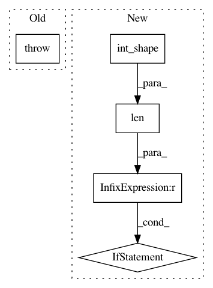

8202e627c7d7897728d824c84a6d479ca84a9098,keras/backend/theano_backend.py,,slice,#Any#Any#Any#,1331
Before Change
def slice(x, start, size):
raise NotImplementedError
def pattern_broadcast(x, broadcastable):
return T.patternbroadcast(x, broadcastable)
After Change
def slice(x, start, size):
if not (len(int_shape(x)) == len(start) == len(size)):
raise ValueError("The dimension and the size of indices should match.")
out = x[tuple([py_slice(i, i + j) for (i, j) in zip(start, size)])]
out._keras_shape = tuple(size)
return out
def pattern_broadcast(x, broadcastable):
return T.patternbroadcast(x, broadcastable)
// VALUE MANIPULATION
def get_value(x):
if not hasattr(x, "get_value"):
raise TypeError("`get_value` can only be called on a variable. "
"If you have an expression instead, use `eval()`.")
return x.get_value()
def batch_get_value(xs):
Returns the value of more than one tensor variable,
as a list of Numpy arrays.
return [get_value(x) for x in xs]
def set_value(x, value):
x.set_value(np.asarray(value, dtype=x.dtype))
def batch_set_value(tuples):
for x, value in tuples:
x.set_value(np.asarray(value, dtype=x.dtype))
def get_variable_shape(x):
return x.get_value(borrow=True, return_internal_type=True).shape
def print_tensor(x, message=""):
Print the message and the tensor when evaluated and return the same
tensor.
p_op = Print(message)
return p_op(x)
// GRAPH MANIPULATION
class Function(object):
def __init__(self, inputs, outputs, updates=[], name=None, **kwargs):
unique_variables_to_update = {}
for v, nv in updates:
if v not in unique_variables_to_update:
unique_variables_to_update[v] = nv
updates = unique_variables_to_update.items()
self.function = theano.function(inputs, outputs, updates=updates,
allow_input_downcast=True,
on_unused_input="ignore",
name=name,
**kwargs)
self.name = name
def __call__(self, inputs):
assert isinstance(inputs, (list, tuple))
return self.function(*inputs)
def _raise_invalid_arg(key):
msg = "Invalid argument "%s" passed to K.function with Theano backend" % key
raise ValueError(msg)
def function(inputs, outputs, updates=[], **kwargs):
if len(kwargs) > 0:
for key in kwargs.keys():
if not has_arg(theano.function, key, True):
_raise_invalid_arg(key)
return Function(inputs, outputs, updates=updates, **kwargs)
def gradients(loss, variables):
return T.grad(loss, variables)
def stop_gradient(variables):
Returns `variables` but with zero gradient w.r.t. every other variable.
// Arguments
variables: tensor or list of tensors to consider constant with respect
to any other variable.
// Returns
A single tensor or a list of tensors (depending on the passed argument)
that has constant gradient with respect to any other variable.
if isinstance(variables, (list, tuple)):
return map(theano.gradient.disconnected_grad, variables)
else:
return theano.gradient.disconnected_grad(variables)
// CONTROL FLOW
def rnn(step_function, inputs, initial_states,
go_backwards=False, mask=None, constants=None,
unroll=False, input_length=None):
Iterates over the time dimension of a tensor.
// Arguments
step_function:
Parameters:
inputs: Tensor with shape (samples, ...) (no time dimension),
representing input for the batch of samples at a certain
time step.
states: List of tensors.
Returns:
outputs: Tensor with shape (samples, ...) (no time dimension),
new_states: List of tensors, same length and shapes
as "states".
inputs: Tensor of temporal data of shape (samples, time, ...)
(at least 3D).
initial_states: Tensor with shape (samples, ...) (no time dimension),
containing the initial values for the states used in
the step function.
go_backwards: Boolean. If True, do the iteration over the time
dimension in reverse order and return the reversed sequence.
mask: Binary tensor with shape (samples, time),
with a zero for every element that is masked.
constants: A list of constant values passed at each step.
unroll: Whether to unroll the RNN or to use a symbolic loop
(`while_loop` or `scan` depending on backend).
input_length: Static number of timesteps in the input.
Must be specified if using `unroll`.
// Returns
A tuple (last_output, outputs, new_states).
last_output: The latest output of the rnn, of shape `(samples, ...)`
outputs: Tensor with shape `(samples, time, ...)` where each
entry `outputs[s, t]` is the output of the step function
at time `t` for sample `s`.
new_states: List of tensors, latest states returned by
the step function, of shape `(samples, ...)`.
ndim = inputs.ndim
assert ndim >= 3, "Input should be at least 3D."
if unroll:
if input_length is None:
raise ValueError("When specifying `unroll=True`, "
"an `input_length` "
"must be provided to `rnn`.")
axes = [1, 0] + list(range(2, ndim))
inputs = inputs.dimshuffle(axes)
if constants is None:
constants = []
global uses_learning_phase
uses_learning_phase = False
if mask is not None:
if mask.ndim != 2:
raise ValueError(
"mask should have `shape=(samples, time)`, "
"got {}".format(mask.shape))
mask = mask.dimshuffle([1, 0])
def get_matching_mask(mask_t, ref_tensor_t):
// tf.where needs its condition tensor
// to be the same shape as its two
// result tensors
ndim = ref_tensor_t.ndim
for _ in range(ndim - 1):
mask_t = expand_dims(mask_t)
add_shape = ref_tensor_t.shape[1:]
reps = T.concatenate([[1], add_shape], 0)
return T.tile(mask_t, reps, ndim=ndim)
if unroll:
indices = list(range(input_length))
if go_backwards:
indices = indices[::-1]
successive_outputs = []
successive_states = []
states = initial_states
for i in indices:
output, new_states = step_function(inputs[i], states + constants)
if getattr(output, "_uses_learning_phase", False):
uses_learning_phase = True
if len(successive_outputs) == 0:
prev_output = zeros_like(output)
else:
prev_output = successive_outputs[-1]
output_mask = get_matching_mask(mask[i], output)
output = T.switch(output_mask, output, prev_output)
kept_states = []
for state, new_state in zip(states, new_states):
state_mask = get_matching_mask(mask[i], state)
kept_states.append(T.switch(state_mask, new_state, state))
states = kept_states
successive_outputs.append(output)
successive_states.append(states)
outputs = T.stack(*successive_outputs)
states = []
for i in range(len(successive_states[-1])):
new_states = []
for states_at_step in successive_states:
new_states.append(states_at_step[i])
states.append(T.stack(*new_states))
else:
// build an all-zero tensor of shape (samples, output_dim)
initial_output = step_function(inputs[0], initial_states + constants)
initial_output = initial_output[0] * 0
// Theano gets confused by broadcasting patterns in the scan op
initial_output = T.unbroadcast(initial_output, 0, 1)
if len(initial_states) > 0:
initial_states[0] = T.unbroadcast(initial_states[0], 0, 1)
def _step(inputs, mask, output_tm1, *states):
outputs, new_states = step_function(inputs, states)
if getattr(outputs, "_uses_learning_phase", False):
global uses_learning_phase
uses_learning_phase = True
// output previous output if masked.
output_mask = get_matching_mask(mask, outputs)
outputs = T.switch(output_mask, outputs, output_tm1)
return_states = []
for state, new_state in zip(states, new_states):
state_mask = get_matching_mask(mask, state)
return_states.append(T.switch(state_mask, new_state, state))
return [outputs] + return_states
results, _ = theano.scan(
_step,
sequences=[inputs, mask],
outputs_info=[initial_output] + initial_states,
non_sequences=constants,
go_backwards=go_backwards)
// deal with Theano API inconsistency
if isinstance(results, list):
outputs = results[0]
states = results[1:]
else:
outputs = results
states = []
else:
if unroll:
indices = list(range(input_length))
if go_backwards:
indices = indices[::-1]
successive_outputs = []
successive_states = []
states = initial_states
for i in indices:
outputs, states = step_function(inputs[i], states + constants)
if getattr(outputs, "_uses_learning_phase", False):
uses_learning_phase = True
successive_outputs.append(outputs)
successive_states.append(states)
outputs = T.stack(*successive_outputs)
states = []
for i in range(len(successive_states[-1])):
states.append(T.stack(
*[states_at_step[i] for states_at_step in successive_states]))
else:
def _step(inputs, *states):
outputs, new_states = step_function(inputs, states)
if getattr(outputs, "_uses_learning_phase", False):
global uses_learning_phase
uses_learning_phase = True
return [outputs] + new_states
// Theano likes to make shape==1 dimensions
// in the initial states (outputs_info) broadcastable
if len(initial_states) > 0:
initial_states[0] = T.unbroadcast(initial_states[0], 0, 1)
results, _ = theano.scan(
_step,
sequences=inputs,
outputs_info=[None] + initial_states,
non_sequences=constants,
go_backwards=go_backwards)
// deal with Theano API inconsistency
if isinstance(results, list):
outputs = results[0]
states = results[1:]
else:
outputs = results
states = []
outputs = T.squeeze(outputs)
last_output = outputs[-1]
axes = [1, 0] + list(range(2, outputs.ndim))
outputs = outputs.dimshuffle(axes)
states = [T.squeeze(state[-1]) for state in states]
last_output._uses_learning_phase = uses_learning_phase
return last_output, outputs, states
def switch(condition, then_expression, else_expression):
Switches between two operations depending on a scalar value.
Note that both `then_expression` and `else_expression`
should be symbolic tensors of the *same shape*.
// Arguments
condition: scalar tensor (`int` or `bool`).
then_expression: either a tensor, or a callable that returns a tensor.
else_expression: either a tensor, or a callable that returns a tensor.
// Returns
The selected tensor.
if callable(then_expression):
then_expression = then_expression()
if callable(else_expression):
else_expression = else_expression()
cond_ndim = ndim(condition)
expr_ndim = ndim(then_expression)
if cond_ndim < expr_ndim:
ndim_diff = expr_ndim - cond_ndim
for _ in range(ndim_diff):
condition = expand_dims(condition)
return T.switch(condition, then_expression, else_expression)
def in_train_phase(x, alt, training=None):
Selects `x` in train phase, and `alt` otherwise.
Note that `alt` should have the *same shape* as `x`.
// Returns
Either `x` or `alt` based on the `training` flag.
the `training` flag defaults to `K.learning_phase()`.
if training is None:
training = learning_phase()
uses_learning_phase = True
else:
uses_learning_phase = False
if training is 1 or training is True:
if callable(x):
return x()
else:
return x
elif training is 0 or training is False:
if callable(alt):
return alt()
else:
return alt
if callable(x):
x = x()
if callable(alt):
alt = alt()
// else: assume learning phase is a placeholder tensor.
x = ifelse(training, x, alt)
if uses_learning_phase:
x._uses_learning_phase = True
return x
def in_test_phase(x, alt, training=None):
Selects `x` in test phase, and `alt` otherwise.
Note that `alt` should have the *same shape* as `x`.
// Returns
Either `x` or `alt` based on `K.learning_phase`.
return in_train_phase(alt, x, training=training)
// NN OPERATIONS
def _assert_has_capability(module, func):
if not hasattr(module, func):
raise EnvironmentError(
"It looks like like your version of "
"Theano is out of date. "
"Install the latest version with:\n"
"pip install git+git://github.com/Theano/Theano.git "
"--upgrade --no-deps")
def elu(x, alpha=1.0):
Exponential linear unit
// Arguments
x: Tensor to compute the activation function for.
alpha: scalar
_assert_has_capability(T.nnet, "elu")
return T.nnet.elu(x, alpha)
def relu(x, alpha=0., max_value=None, threshold=0.):
_assert_has_capability(T.nnet, "relu")
if alpha != 0.:
if threshold != 0.:
negative_part = T.nnet.relu(-x + threshold)
else:
negative_part = T.nnet.relu(-x)
if threshold != 0.:
x = x * T.cast(T.gt(x, threshold), floatx())
else:
x = T.nnet.relu(x)
if max_value is not None:
x = T.clip(x, 0.0, max_value)
if alpha != 0.:
x -= alpha * negative_part
return x
def softmax(x, axis=-1):
if (axis == -1 or axis == x.ndim - 1) and x.ndim == 2:
return T.nnet.softmax(x)
xm = x.max(axis=axis, keepdims=True)
return T.exp(x - xm) / T.exp(
x - xm).sum(axis=axis, keepdims=True)
def softplus(x):
return T.nnet.softplus(x)
def softsign(x):
return T_softsign(x)
def categorical_crossentropy(target, output, from_logits=False, axis=-1):
output_dimensions = list(range(len(int_shape(output))))
if axis != -1 and axis not in output_dimensions:
raise ValueError(
"{}{}{}".format(
"Unexpected channels axis {}. ".format(axis),
"Expected to be -1 or one of the axes of `output`, ",
"which has {} dimensions.".format(len(int_shape(output)))))
// If the channels are not in the last axis, move them to be there:
if axis != -1 and axis != output_dimensions[-1]:
permutation = output_dimensions[:axis]
permutation += output_dimensions[axis + 1:] + [axis]
output = permute_dimensions(output, permutation)
target = permute_dimensions(target, permutation)
if from_logits:
output = T.nnet.softmax(output)
else:
// scale preds so that the class probas of each sample sum to 1
output /= output.sum(axis=-1, keepdims=True)
// avoid numerical instability with _EPSILON clipping
output = T.clip(output, epsilon(), 1.0 - epsilon())
return T.nnet.categorical_crossentropy(output, target)
def sparse_categorical_crossentropy(target, output, from_logits=False, axis=-1):
output_dimensions = list(range(len(int_shape(output))))
if axis != -1 and axis not in output_dimensions:
raise ValueError(
"{}{}{}".format(
"Unexpected channels axis {}. ".format(axis),
"Expected to be -1 or one of the axes of `output`, ",
"which has {} dimensions.".format(len(int_shape(output)))))
// If the channels are not in the last axis, move them to be there:
if axis != -1 and axis != output_dimensions[-1]:
permutation = output_dimensions[:axis]
permutation += output_dimensions[axis + 1:] + [axis]
output = permute_dimensions(output, permutation)
target = permute_dimensions(target, permutation)
target = T.cast(T.flatten(target), "int32")
target = T.extra_ops.to_one_hot(target, nb_class=output.shape[-1])
target = reshape(target, shape(output))
return categorical_crossentropy(target, output, from_logits, axis=-1)
def binary_crossentropy(target, output, from_logits=False):
if from_logits:
output = T.nnet.sigmoid(output)
// avoid numerical instability with _EPSILON clipping
output = T.clip(output, epsilon(), 1.0 - epsilon())
return T.nnet.binary_crossentropy(output, target)
def sigmoid(x):
return T.nnet.sigmoid(x)
def hard_sigmoid(x):
return T.nnet.hard_sigmoid(x)
def tanh(x):
return T.tanh(x)
def dropout(x, level, noise_shape=None, seed=None):
Sets entries in `x` to zero at random,
while scaling the entire tensor.
// Arguments
x: tensor
level: fraction of the entries in the tensor
that will be set to 0.
noise_shape: shape for randomly generated keep/drop flags,
must be broadcastable to the shape of `x`
seed: random seed to ensure determinism.
if level < 0. or level >= 1:
raise ValueError("Dropout level must be in interval [0, 1[.")
if seed is None:
seed = np.random.randint(1, 10e6)
if isinstance(noise_shape, list):
noise_shape = tuple(noise_shape)
rng = RandomStreams(seed=seed)
retain_prob = 1. - level
if noise_shape is None:
random_tensor = rng.binomial(x.shape, p=retain_prob, dtype=x.dtype)
else:
random_tensor = rng.binomial(noise_shape, p=retain_prob, dtype=x.dtype)
random_tensor = T.patternbroadcast(random_tensor,
[dim == 1 for dim in noise_shape])
x *= random_tensor
x /= retain_prob
return x
def l2_normalize(x, axis=None):
square_sum = T.sum(T.square(x), axis=axis, keepdims=True)
norm = T.sqrt(T.maximum(square_sum, epsilon()))
return x / norm
def in_top_k(predictions, targets, k):
Returns whether the `targets` are in the top `k` `predictions`.
// Arguments
predictions: A tensor of shape `(batch_size, classes)` and type `float32`.
targets: A 1D tensor of length `batch_size` and type `int32` or `int64`.
k: An `int`, number of top elements to consider.
// Returns
A 1D tensor of length `batch_size` and type `bool`.
`output[i]` is `True` if `predictions[i, targets[i]]` is within top-`k`
values of `predictions[i]`.
// handle k < 1 and k >= predictions.shape[1] cases to match TF behavior
if k < 1:
// dtype="bool" is only available since Theano 0.9.0
try:
return T.zeros_like(targets, dtype="bool")
except TypeError:
return T.zeros_like(targets, dtype="int8")
if k >= int_shape(predictions)[1]:
try:
return T.ones_like(targets, dtype="bool")
except TypeError:
return T.ones_like(targets, dtype="int8")
predictions_k = T.sort(predictions)[:, -k]
targets_values = predictions[T.arange(targets.shape[0]), targets]
return T.ge(targets_values, predictions_k)
// CONVOLUTIONS
def _preprocess_conv2d_input(x, data_format):
if data_format == "channels_last":
// TF uses the last dimension as channel dimension,
// instead of the 2nd one.
// TH input shape: (samples, input_depth, rows, cols)
// TF input shape: (samples, rows, cols, input_depth)
x = x.dimshuffle((0, 3, 1, 2))
return x
def _preprocess_conv3d_input(x, data_format):
if data_format == "channels_last":
// TF uses the last dimension as channel dimension,
// instead of the 2nd one.
// TH input shape: (samples, input_depth, rows, cols, slices)
// TF input shape: (samples, rows, cols, slices, input_depth)
x = x.dimshuffle((0, 4, 1, 2, 3))
return x
def _preprocess_conv2d_kernel(kernel, data_format):
// As of Keras 2.0.0, all kernels are normalized
// on the format `(rows, cols, input_depth, depth)`,
// independently of `data_format`.
// Theano expects `(depth, input_depth, rows, cols)`.
kernel = kernel.dimshuffle((3, 2, 0, 1))
return kernel
def _preprocess_conv2d_depthwise_kernel(kernel, kernel_shape, data_format):
// As of Keras 2.0.0, all kernels are normalized
// on the format `(rows, cols, input_depth, depth)`,
// independently of `data_format`.
// Theano expects `(input_depth * depth, 1, rows, cols)`
// for depthwise convolution.
kernel = kernel[::-1, ::-1, :, :]
kernel = kernel.dimshuffle((2, 3, 0, 1))
kernel = reshape(kernel, kernel_shape)
return kernel
def _preprocess_conv3d_kernel(kernel, data_format):
// As of Keras 2.0.0, all kernels are normalized
// on the format `(space, input_depth, depth)`,
// independently of `data_format`.
// Theano expects `(depth, input_depth, space)`.
kernel = kernel.dimshuffle((4, 3, 0, 1, 2))
return kernel
def _preprocess_padding(padding):
if padding == "same":
th_padding = "half"
elif padding == "valid":
th_padding = "valid"
elif padding == "full":
th_padding = "full"
else:
raise ValueError("Border mode not supported:", str(padding))
return th_padding
def _preprocess_conv2d_image_shape(image_shape, data_format):
// Theano might not accept long type
def int_or_none(value):
try:
return int(value)
except TypeError:
return None
if data_format == "channels_last":
if image_shape:
image_shape = transpose_shape(image_shape, "channels_first",
spatial_axes=(1, 2))
if image_shape is not None:
image_shape = tuple(int_or_none(v) for v in image_shape)
return image_shape
def _preprocess_conv3d_volume_shape(volume_shape, data_format):
// Theano might not accept long type
def int_or_none(value):
try:
return int(value)
except TypeError:
return None
if data_format == "channels_last":
if volume_shape:
volume_shape = (volume_shape[0], volume_shape[4],
volume_shape[1], volume_shape[2], volume_shape[3])
if volume_shape is not None:
volume_shape = tuple(int_or_none(v) for v in volume_shape)
return volume_shape
def _preprocess_conv2d_filter_shape(filter_shape, data_format):
// Theano might not accept long type
def int_or_none(value):
try:
return int(value)
except TypeError:
return None
if filter_shape:
filter_shape = (filter_shape[3], filter_shape[2],
filter_shape[0], filter_shape[1])
if filter_shape is not None:
filter_shape = tuple(int_or_none(v) for v in filter_shape)
return filter_shape
def _preprocess_conv2d_depthwise_filter_shape(filter_shape, data_format):
// Theano might not accept long type
def int_or_none(value):
try:
return int(value)
except TypeError:
return None
if filter_shape:
filter_shape = (filter_shape[3] * filter_shape[2], 1,
filter_shape[0], filter_shape[1])
if filter_shape is not None:
filter_shape = tuple(int_or_none(v) for v in filter_shape)
return filter_shape
def _preprocess_conv3d_filter_shape(filter_shape, data_format):
// Theano might not accept long type
def int_or_none(value):
try:
return int(value)
except TypeError:
return None
if filter_shape:
filter_shape = (filter_shape[4], filter_shape[3],
filter_shape[0], filter_shape[1], filter_shape[2])
if filter_shape is not None:
filter_shape = tuple(int_or_none(v) for v in filter_shape)
return filter_shape
def _postprocess_conv2d_output(conv_out, x,
padding, kernel_shape,
strides, data_format):
if padding == "same":
if kernel_shape[2] % 2 == 0:
i = (x.shape[2] + strides[0] - 1) // strides[0]
conv_out = conv_out[:, :, :i, :]
if kernel_shape[3] % 2 == 0:
i = (x.shape[3] + strides[1] - 1) // strides[1]
conv_out = conv_out[:, :, :, :i]
if data_format == "channels_last":
conv_out = conv_out.dimshuffle((0, 2, 3, 1))
return conv_out
def _postprocess_conv3d_output(conv_out, x,
padding, kernel_shape,
strides, data_format):
if padding == "same":
if kernel_shape[2] % 2 == 0:
i = (x.shape[2] + strides[0] - 1) // strides[0]
conv_out = conv_out[:, :, :i, :, :]
if kernel_shape[3] % 2 == 0:
i = (x.shape[3] + strides[1] - 1) // strides[1]
conv_out = conv_out[:, :, :, :i, :]
if kernel_shape[4] % 2 == 0:
i = (x.shape[4] + strides[2] - 1) // strides[2]
conv_out = conv_out[:, :, :, :, :i]
if data_format == "channels_last":
conv_out = conv_out.dimshuffle((0, 2, 3, 4, 1))
return conv_out
def conv1d(x, kernel, strides=1, padding="valid",
data_format=None, dilation_rate=1):
1D convolution.
// Arguments
kernel: kernel tensor.
strides: stride integer.
padding: string, `"same"`, `"causal"` or `"valid"`.
data_format: string, one of "channels_last", "channels_first"
dilation_rate: integer.
data_format = normalize_data_format(data_format)
kernel_shape = int_shape(kernel)
if padding == "causal":
// causal (dilated) convolution:
if not kernel_shape:
raise AttributeError("Causal padding requires kernel._keras_shape set.")
left_pad = dilation_rate * (kernel_shape[0] - 1)
x = temporal_padding(x, (left_pad, 0))
padding = "valid"
shape = int_shape(x)
if data_format == "channels_last":
// original shape: (batch, length, input_dim)
// add dim to x to have (batch, length, 1, input_dim)
x = expand_dims(x, 2)
// update x._keras_shape
if shape is not None:
x._keras_shape = (shape[0], shape[1], 1, shape[2])
else:
// original shape: (batch, input_dim, length)
// add dim to x to have (batch, input_dim, length, 1)
x = expand_dims(x, 3)
// update x._keras_shape
if shape is not None:
x._keras_shape = (shape[0], shape[1], shape[2], 1)
// update dilation rate, strides
dilation_rate = (dilation_rate, 1)
strides = (strides, 1)
// add dim to kernel (always same format independently of data_format)
// i.e. (rows, 1, input_depth, depth)
kernel = expand_dims(kernel, 1)
output = conv2d(x, kernel,
strides=strides, padding=padding,
data_format=data_format, dilation_rate=dilation_rate)
// remove added dim
if data_format == "channels_last":
output = squeeze(output, 2)
else:
output = squeeze(output, 3)
return output
def conv2d(x, kernel, strides=(1, 1), padding="valid",
data_format=None, dilation_rate=(1, 1)):
2D convolution.
// Arguments
kernel: kernel tensor.
strides: strides tuple.
padding: string, "same" or "valid".
data_format: "channels_last" or "channels_first".
Whether to use Theano or TensorFlow data format
in inputs/kernels/outputs.
data_format = normalize_data_format(data_format)
image_shape = _preprocess_conv2d_image_shape(int_shape(x), data_format)
kernel_shape = int_shape(kernel)
if kernel_shape is None:
kernel_shape = kernel.eval().shape // in case of a shared variable
kernel_shape = _preprocess_conv2d_filter_shape(kernel_shape, data_format)
x = _preprocess_conv2d_input(x, data_format)
kernel = _preprocess_conv2d_kernel(kernel, data_format)
th_padding = _preprocess_padding(padding)
conv_out = T.nnet.conv2d(x, kernel,
border_mode=th_padding,
subsample=strides,
input_shape=image_shape,
filter_shape=kernel_shape,
filter_dilation=dilation_rate)
conv_out = _postprocess_conv2d_output(conv_out, x, padding,
kernel_shape, strides, data_format)
return conv_out
def conv2d_transpose(x, kernel, output_shape, strides=(1, 1),
padding="valid", data_format=None, dilation_rate=(1, 1)):
2D deconvolution (transposed convolution).
// Arguments
kernel: kernel tensor.
output_shape: desired dimensions of output.
strides: strides tuple.
padding: string, "same" or "valid".
data_format: "channels_last" or "channels_first".
Whether to use Theano or TensorFlow data format
in inputs/kernels/outputs.
dilation_rate: tuple of 2 integers.
// Raises
ValueError: if using an even kernel size with padding "same".
flip_filters = False
data_format = normalize_data_format(data_format)
if data_format == "channels_last":
output_shape = (output_shape[0],
output_shape[3],
output_shape[1],
output_shape[2])
kernel_shape = int_shape(kernel)
if kernel_shape is None:
kernel_shape = kernel.eval().shape // in case of a shared variable
if padding == "same" and kernel_shape[0] % 2 == 0:
raise ValueError("In `Conv2DTranspose`, with padding mode `same`, "
"even kernel sizes are not supported with Theano. "
"You can set `kernel_size` to an odd number.")
kernel_shape = _preprocess_conv2d_filter_shape(kernel_shape, data_format)
x = _preprocess_conv2d_input(x, data_format)
kernel = _preprocess_conv2d_kernel(kernel, data_format)
th_padding = _preprocess_padding(padding)
op = T.nnet.abstract_conv.AbstractConv2d_gradInputs(
imshp=None,
kshp=kernel_shape,
subsample=strides,
border_mode=th_padding,
filter_flip=not flip_filters,
filter_dilation=dilation_rate)
conv_out = op(kernel, x, output_shape[2:])
conv_out = _postprocess_conv2d_output(conv_out, x, padding,
kernel_shape, strides, data_format)
return conv_out
def separable_conv1d(x, depthwise_kernel, pointwise_kernel, strides=1,
padding="valid", data_format=None, dilation_rate=1):
1D convolution with separable filters.
// Arguments
x: input tensor
depthwise_kernel: convolution kernel for the depthwise convolution.
pointwise_kernel: kernel for the 1x1 convolution.
strides: strides integer.
padding: string, `"same"` or `"valid"`.
data_format: string, `"channels_last"` or `"channels_first"`.
dilation_rate: integer dilation rate.
// Returns
Output tensor.
// Raises
ValueError: if `data_format` is neither `"channels_last"` or
`"channels_first"`.
data_format = normalize_data_format(data_format)
if isinstance(strides, int):
strides = (strides,)
if isinstance(dilation_rate, int):
dilation_rate = (dilation_rate,)
if data_format == "channels_last":
spatial_start_dim = 2
else:
spatial_start_dim = 3
x = expand_dims(x, spatial_start_dim)
depthwise_kernel = expand_dims(depthwise_kernel, 1)
pointwise_kernel = expand_dims(pointwise_kernel, 1)
strides = strides + (1,)
dilation_rate = dilation_rate + (1,)
image_shape = _preprocess_conv2d_image_shape(int_shape(x), data_format)
depthwise_kernel_shape = int_shape(depthwise_kernel)
if depthwise_kernel_shape is None:
// in case of a shared variable
depthwise_kernel_shape = depthwise_kernel.eval().shape
depthwise_kernel_shape = _preprocess_conv2d_depthwise_filter_shape(
depthwise_kernel_shape, data_format)
pointwise_kernel_shape = int_shape(pointwise_kernel)
if pointwise_kernel_shape is None:
// in case of a shared variable
pointwise_kernel_shape = pointwise_kernel.eval().shape
pointwise_kernel_shape = _preprocess_conv2d_filter_shape(
pointwise_kernel_shape, data_format)
x = _preprocess_conv2d_input(x, data_format)
depthwise_kernel = _preprocess_conv2d_depthwise_kernel(
depthwise_kernel, depthwise_kernel_shape, data_format)
pointwise_kernel = _preprocess_conv2d_kernel(pointwise_kernel, data_format)
th_padding = _preprocess_padding(padding)
conv_out = T.nnet.conv2d(x, depthwise_kernel,
border_mode=th_padding,
subsample=strides,
input_shape=image_shape,
filter_shape=depthwise_kernel_shape,
filter_dilation=dilation_rate,
num_groups=image_shape[1])
conv_out = T.nnet.conv2d(conv_out, pointwise_kernel,
border_mode=th_padding,
subsample=(1, 1),
input_shape=None,
filter_shape=pointwise_kernel_shape,
filter_dilation=dilation_rate)
conv_out = _postprocess_conv2d_output(conv_out, x, padding,
pointwise_kernel_shape,
strides, data_format)
conv_out = squeeze(conv_out, spatial_start_dim)
return conv_out
def separable_conv2d(x, depthwise_kernel, pointwise_kernel, strides=(1, 1),
padding="valid", data_format=None, dilation_rate=(1, 1)):
2D convolution with separable filters.
// Arguments
x: input tensor
depthwise_kernel: convolution kernel for the depthwise convolution.
pointwise_kernel: kernel for the 1x1 convolution.
strides: strides tuple (length 2).
padding: string, `"same"` or `"valid"`.
data_format: string, `"channels_last"` or `"channels_first"`.
dilation_rate: tuple of integers,
dilation rates for the separable convolution.
// Returns
Output tensor.
// Raises
ValueError: if `data_format` is neither `"channels_last"` or
`"channels_first"`.
data_format = normalize_data_format(data_format)
image_shape = _preprocess_conv2d_image_shape(int_shape(x), data_format)
depthwise_kernel_shape = int_shape(depthwise_kernel)
if depthwise_kernel_shape is None:
// in case of a shared variable
depthwise_kernel_shape = depthwise_kernel.eval().shape
depthwise_kernel_shape = _preprocess_conv2d_depthwise_filter_shape(
depthwise_kernel_shape, data_format)
pointwise_kernel_shape = int_shape(pointwise_kernel)
if pointwise_kernel_shape is None:
// in case of a shared variable
pointwise_kernel_shape = pointwise_kernel.eval().shape
pointwise_kernel_shape = _preprocess_conv2d_filter_shape(
pointwise_kernel_shape, data_format)
x = _preprocess_conv2d_input(x, data_format)
depthwise_kernel = _preprocess_conv2d_depthwise_kernel(
depthwise_kernel, depthwise_kernel_shape, data_format)
pointwise_kernel = _preprocess_conv2d_kernel(pointwise_kernel, data_format)
th_padding = _preprocess_padding(padding)
conv_out = T.nnet.conv2d(x, depthwise_kernel,
border_mode=th_padding,
subsample=strides,
input_shape=image_shape,
filter_shape=depthwise_kernel_shape,
filter_dilation=dilation_rate,
num_groups=image_shape[1])
conv_out = T.nnet.conv2d(conv_out, pointwise_kernel,
border_mode=th_padding,
subsample=(1, 1),
input_shape=None,
filter_shape=pointwise_kernel_shape,
filter_dilation=dilation_rate)
conv_out = _postprocess_conv2d_output(conv_out, x, padding,
pointwise_kernel_shape,
strides, data_format)
return conv_out
def depthwise_conv2d(x, depthwise_kernel, strides=(1, 1), padding="valid",
data_format=None, dilation_rate=(1, 1)):
2D convolution with separable filters.
// Arguments
x: input tensor
depthwise_kernel: convolution kernel for the depthwise convolution.
strides: strides tuple (length 2).
padding: string, `"same"` or `"valid"`.
data_format: string, `"channels_last"` or `"channels_first"`.
dilation_rate: tuple of integers,
dilation rates for the separable convolution.
// Returns
Output tensor.
// Raises
ValueError: if `data_format` is neither `"channels_last"` or
`"channels_first"`.
data_format = normalize_data_format(data_format)
image_shape = _preprocess_conv2d_image_shape(int_shape(x), data_format)
depthwise_kernel_shape = int_shape(depthwise_kernel)
if depthwise_kernel_shape is None:
// in case of a shared variable
depthwise_kernel_shape = depthwise_kernel.eval().shape
depthwise_kernel_shape = _preprocess_conv2d_depthwise_filter_shape(
depthwise_kernel_shape, data_format)
x = _preprocess_conv2d_input(x, data_format)
depthwise_kernel = _preprocess_conv2d_depthwise_kernel(
depthwise_kernel, depthwise_kernel_shape, data_format)
th_padding = _preprocess_padding(padding)
conv_out = T.nnet.conv2d(x, depthwise_kernel,
border_mode=th_padding,
subsample=strides,
input_shape=image_shape,
filter_shape=depthwise_kernel_shape,
filter_dilation=dilation_rate,
num_groups=image_shape[1])
conv_out = _postprocess_conv2d_output(
conv_out, x, padding, depthwise_kernel_shape, strides, data_format)
return conv_out
def conv3d(x, kernel, strides=(1, 1, 1),
padding="valid", data_format=None,
dilation_rate=(1, 1, 1)):
3D convolution.
// Arguments
kernel: kernel tensor.
strides: strides tuple.
padding: string, "same" or "valid".
data_format: "channels_last" or "channels_first".
Whether to use Theano or TensorFlow data format
in inputs/kernels/outputs.
data_format = normalize_data_format(data_format)
volume_shape = _preprocess_conv3d_volume_shape(int_shape(x), data_format)
kernel_shape = int_shape(kernel)
if kernel_shape is None:
kernel_shape = kernel.eval().shape // in case of a shared variable
kernel_shape = _preprocess_conv3d_filter_shape(kernel_shape, data_format)
x = _preprocess_conv3d_input(x, data_format)
kernel = _preprocess_conv3d_kernel(kernel, data_format)
th_padding = _preprocess_padding(padding)
conv_out = T.nnet.conv3d(x, kernel,
border_mode=th_padding,
subsample=strides,
input_shape=volume_shape,
filter_shape=kernel_shape,
filter_dilation=dilation_rate)
conv_out = _postprocess_conv3d_output(conv_out, x, padding,
kernel_shape, strides, data_format)
In pattern: SUPERPATTERN
Frequency: 3
Non-data size: 5
Instances
Project Name: keras-team/keras
Commit Name: 8202e627c7d7897728d824c84a6d479ca84a9098
Time: 2019-03-25
Author: me@taehoonlee.com
File Name: keras/backend/theano_backend.py
Class Name:
Method Name: slice
Project Name: keras-team/keras
Commit Name: 4fc583691b9ebf59c0bbea09fc1f5c7e5ee9c68b
Time: 2017-08-01
Author: souptc@gmail.com
File Name: keras/backend/cntk_backend.py
Class Name:
Method Name: rnn
Project Name: keras-team/keras
Commit Name: 8202e627c7d7897728d824c84a6d479ca84a9098
Time: 2019-03-25
Author: me@taehoonlee.com
File Name: keras/backend/cntk_backend.py
Class Name:
Method Name: slice